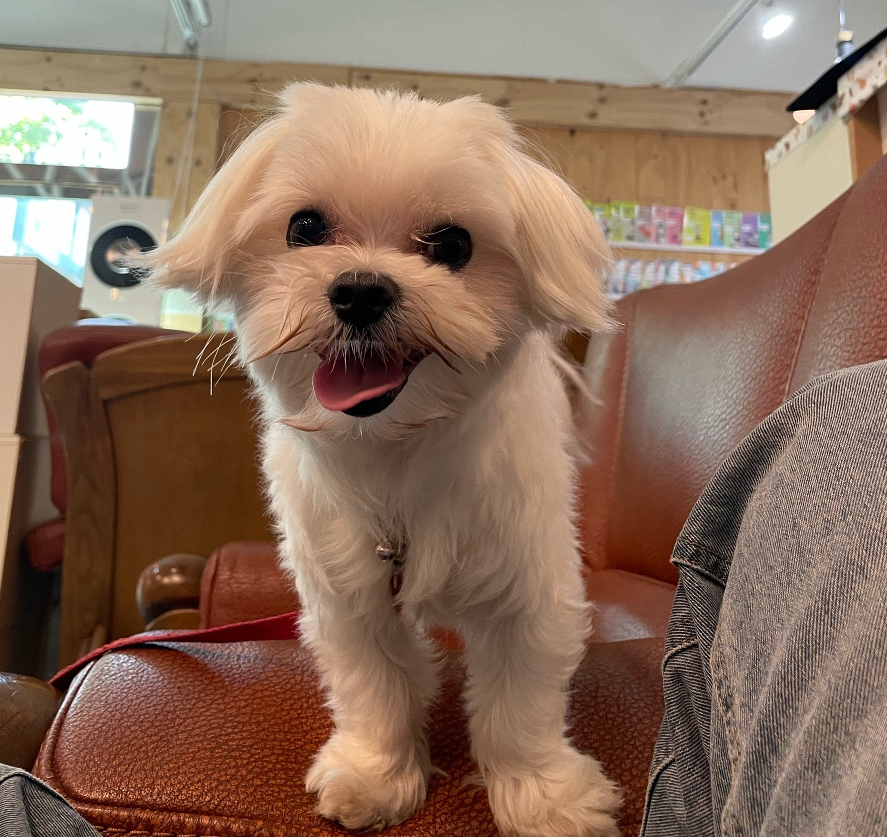
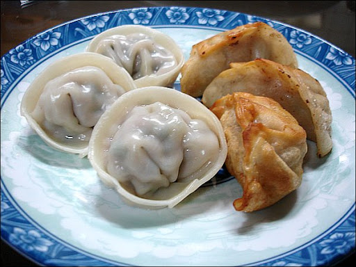
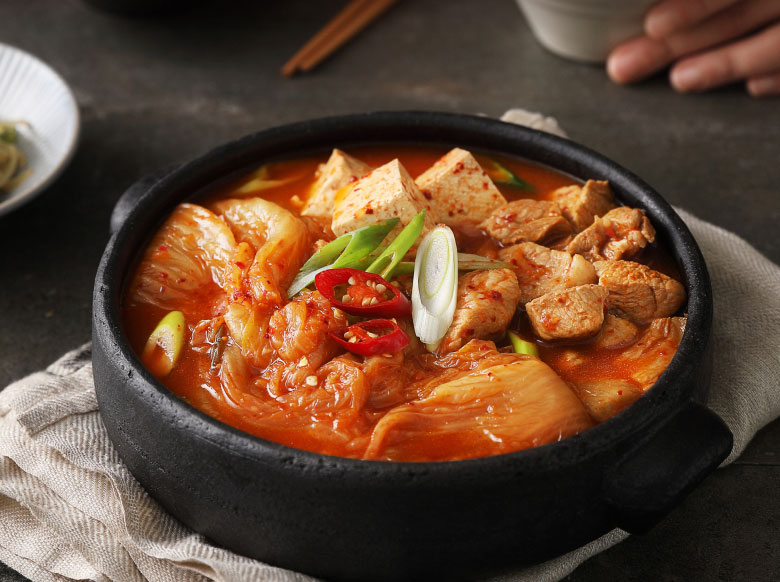

제목1
제목2
제목3
제목4
제목5
제목6
하나의 문단을 표시하고 싶을 때 <p>해당 태그를 사용합니다.





NAVER
index url
Naver(Self) 현재 페이지에서 열기
Naver(Blank) 새탭 열기
오늘의 할 일
아이스카페 레시피
- 우유 180ml 넣기
- 얼음을 가득 넣기
- 에스프레소 샷을 넣아주면
- 완성!
맛있게 드세요!
내가 좋아하는 음식
- 양식
- 한식
div tag 1
div tag 2
span tag 1
span tag 2